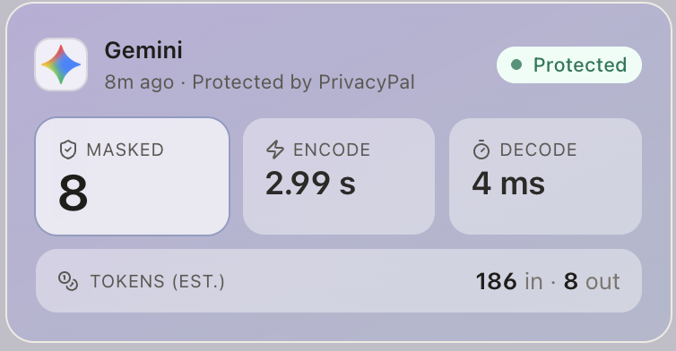

Trusted by 140+ companies
Book a demo
Your people already use AI. PrivacyPal gives the bank the proof: on the device, Privacy Twins swap client PII, account numbers and MNPI for realistic stand-ins before a prompt reaches ChatGPT, Claude or Copilot, and every swap is logged.
The same technology that protects 140+ companies.
15 minutes. Bring your hardest compliance question.
Draft a Q3 narrative for Margaret Chen Nancy Grace, account 4521-8893 7912-4408


 Grok
Hermes Agent
Grok
Hermes Agent
Your analysts are already using AI. Now your risk team can see it.
Generative AI is already doing real work in banking, and much of that work happens in public chatbots. PrivacyPal brings it on the record: every tool kept, every prompt protected, every swap logged.
Account numbers, positions and client notes go into public chatbots, with no log to show an examiner.
Say "no AI" and productivity walks to a personal laptop. The risk stays. Only the visibility goes.
Keep every tool and every analyst. The real data never reaches the AI provider, and every hop is logged.
The analyst keeps the same workflow. The client data never reaches the AI provider.
"Draft a Q3 narrative for Margaret Chen, account 4521-8893, $4.2M in AAPL." Business as usual.
On the device, real values become realistic twins: Nancy Grace, 7912-4408, $3.8M in MSFT. Only the twins go to the model.
The LLM works a fully synthetic prompt. On return, twins swap back to the real client, and every hop is logged, per user, in a SIEM-ready record.
NPI, MNPI and account data are swapped on the device, before send. OpenAI, Anthropic and Google receive the twins, never the real values.
Redaction blinds the model. Privacy Twins keep the statistical bandwidth, so the market analysis and client narratives stay sharp.
Every prompt and every swap is logged, per user, SIEM-ready. Each record shows who sent it, to which AI, when, and which kinds of data were protected.

Protection runs on the device, before a prompt or file reaches an AI provider. Sensitive values are swapped for Privacy Twins on the endpoint and swapped back to the real values in the answer on the same device. The LLM only ever sees the twins.
Yes. Every prompt, interception and swap gets an audit record: the user, the AI tool, the time, the kinds of data protected and the risk level. The logs are SIEM-ready, and your admins can review them user by user.
Yes. With the Max pack, PrivacyPal works across ChatGPT, Claude, Gemini, Copilot, Grok, Hermes Agent and Claude Code, all protected under one policy.
Yes. PrivacyPal Cloud is a self-hosted gateway that lives in your data center or VPC, for full data sovereignty and DSPM scanning across your databases.
Talk to a banker on our team. Yes, we hire from the industry on purpose. Or download PrivacyPal free and watch it protect a real prompt today.